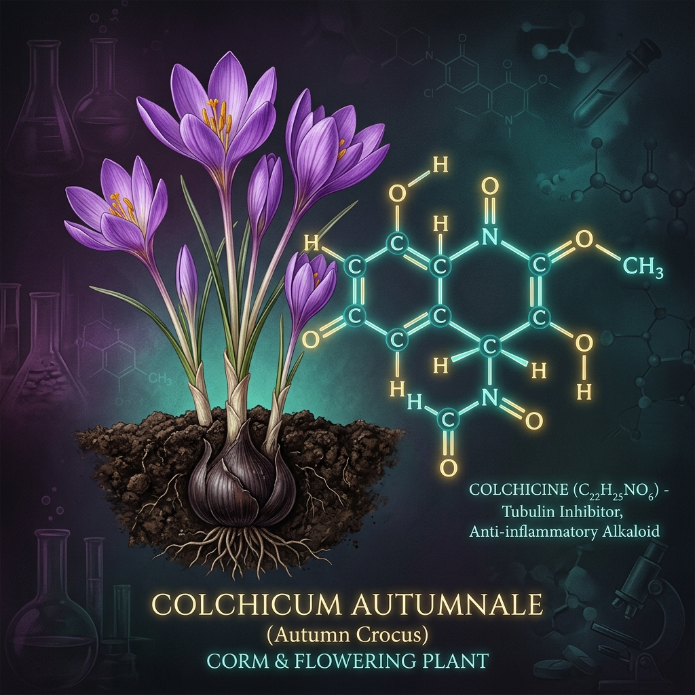
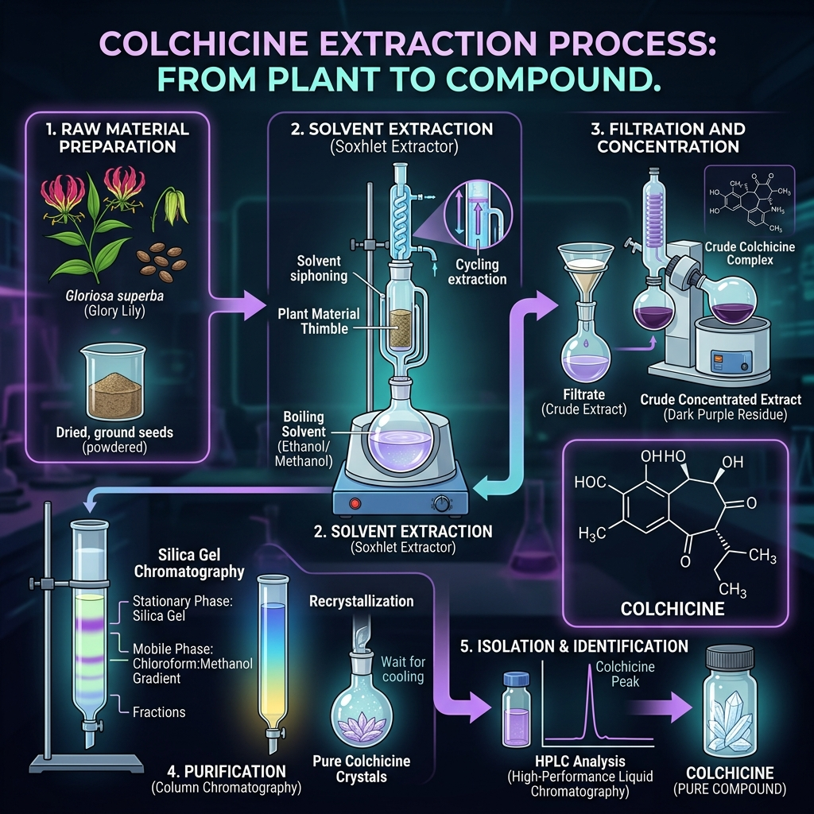
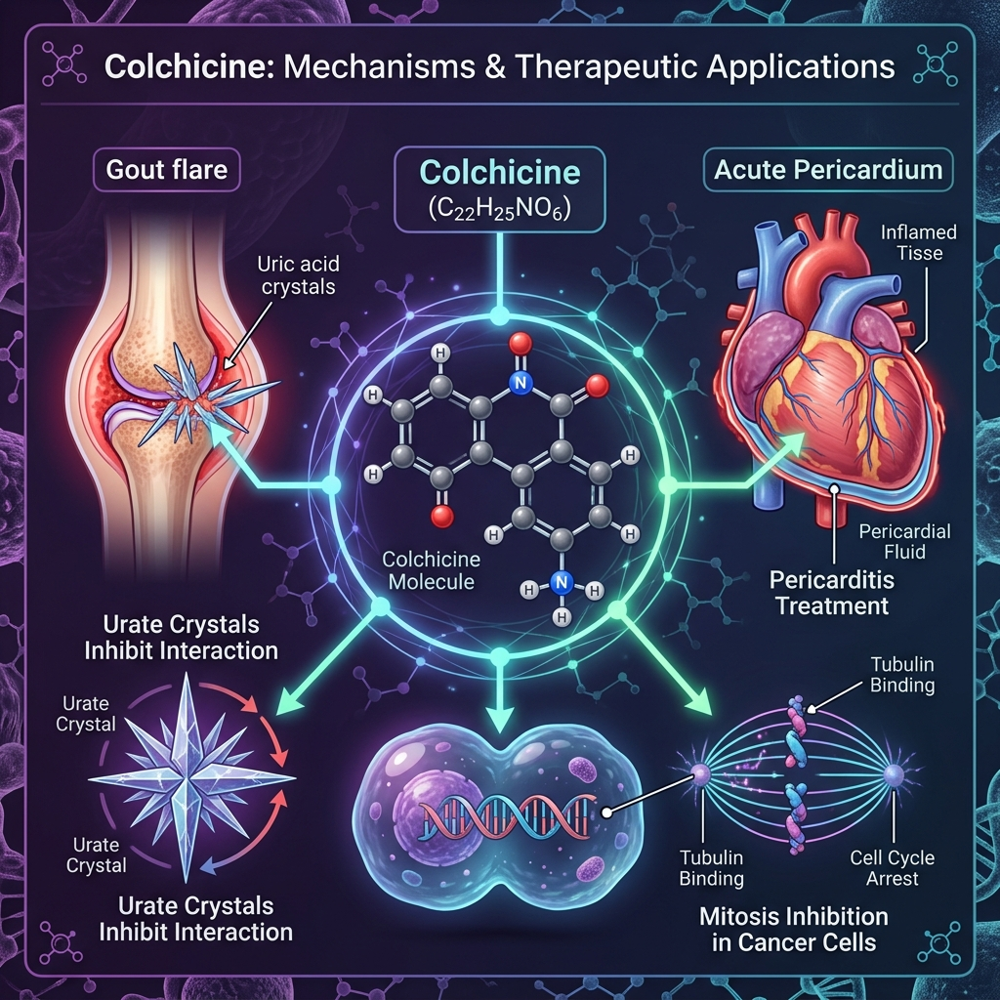

Loading Colchicine

A powerful tropolone alkaloid derived from Colchicum autumnale — one of nature's most fascinating and potent medicinal compounds. From ancient remedy to modern medicine.
A naturally occurring alkaloid with a rich history spanning over two millennia of medical use
Colchicine belongs to the tropolone alkaloid family. It is a naturally occurring secondary metabolite with a unique tricyclic ring structure — rings A (benzene), B (tropolone), and C (acetamido methoxy).
The use of Colchicum autumnale dates back to 1500 BC, documented in the Ebers Papyrus of ancient Egypt for treating joint swelling. Greek physician Dioscorides described its use in the 1st century AD.
Colchicine appears as pale yellow crystals or powder. It is soluble in water, ethanol, and chloroform, but practically insoluble in ether — a key property exploited during its extraction.
Colchicine's unique tricyclic structure is responsible for its potent biological activity. The three fused rings — a trimethoxybenzene ring (A), a tropolone ring (B), and an acetamido methoxy ring (C) — work in concert to inhibit tubulin polymerization.
2D Skeletal Structure of Colchicine
Tricyclic tropolone ring system of Colchicine
The Autumn Crocus — a deceptively beautiful yet highly toxic plant from the Colchicaceae family
| Kingdom | Plantae |
|---|---|
| Order | Liliales |
| Family | Colchicaceae |
| Genus | Colchicum |
| Species | C. autumnale |
| Common Name | Autumn Crocus, Meadow Saffron |
Colchicum autumnale, commonly known as autumn crocus or meadow saffron, is a perennial flowering plant native to Europe and North Africa. It grows in meadows, woodland edges, and damp grasslands at altitudes up to 2,000 meters.
The plant blooms in autumn, producing striking lilac-pink flowers that emerge without leaves — a phenomenon called hysteranthy. Leaves appear in spring, followed by a seed capsule. The underground corm (bulb-like organ) is the primary source for colchicine extraction.
⚠️ Gloriosa superba (glory lily) is also a significant commercial source of colchicine, especially in Asia.
From plant material to pure crystalline alkaloid — a journey through pharmaceutical chemistry
Corms or seeds of Colchicum autumnale are collected, cleaned, and dried. The material is then coarsely powdered to increase surface area for extraction. Seeds are preferred due to higher alkaloid content (~0.8% by dry weight).
The powdered plant material is extracted using suitable solvents. Two primary methods are employed:
Plant material + 70–95% ethanol. Soaked 24–72 hours at room temperature. Simple but lower efficiency.
ClassicalContinuous hot solvent extraction using 70% ethanol or methanol. Higher yield, cycles for 6–8 hours. Most commonly used.
PreferredThe alcohol filtrate is evaporated under reduced pressure. The residue is dissolved in water and defatted with petroleum ether to remove lipophilic compounds (fats, waxes, chlorophylls).
The aqueous fraction is basified to pH 8–9 using dilute ammonia (NH₄OH) or sodium carbonate. At this pH, colchicine (non-basic alkaloid — unusual!) and other alkaloids are extracted into chloroform or dichloromethane.
The organic layer (chloroform extract) is concentrated and subjected to column chromatography using silica gel to separate colchicine from co-extracted compounds. HPLC is used for final purity assessment.
Colchicine-rich fractions are pooled, concentrated, and crystallized from ethyl acetate or acetone. The pale yellow crystals are collected by filtration, washed, and dried. Purity is confirmed by HPLC (>98%) and melting point.

Understanding how colchicine disrupts cellular processes at the molecular level
Colchicine's primary mechanism involves binding to β-tubulin at the colchicine-binding site — a distinct site from where other anti-tubulin drugs (like vincristine or taxol) bind. This disrupts microtubule dynamics.
Colchicine binds to free α/β-tubulin heterodimers at the β-tubulin subunit's colchicine site with high affinity (Kd ≈ 10⁻⁶ M) in a slow, tight, and partially reversible manner.
The colchicine-tubulin complex incorporates into growing microtubule ends, causing a structural "conformational cap" that prevents further polymerization — effectively capping the microtubule ends.
Without functional microtubules, the mitotic spindle cannot form. Cells are arrested in metaphase of mitosis (M-phase arrest), preventing cell division. This underlies both its anti-inflammatory and anti-cancer activities.
In neutrophils, colchicine disrupts microtubule-dependent migration and NALP3 inflammasome assembly, inhibiting IL-1β secretion, degranulation, and superoxide generation — key mediators of gout-related inflammation.
From treating ancient diseases to cutting-edge research — colchicine's remarkable clinical versatility

Colchicine is the first-line treatment for acute gout flares. It inhibits neutrophil migration into joints and blocks NALP3 inflammasome activation, reducing urate crystal-induced inflammation rapidly.
Colchicine is the drug of choice for FMF — a hereditary auto-inflammatory disorder. It prevents recurring episodes of fever, peritonitis, pleuritis, and arthritis, and crucially prevents amyloid A amyloidosis — a life-threatening complication.
The COPE and ICAP trials demonstrated colchicine's efficacy in acute pericarditis, reducing the rate of recurrence by ~50%. It is now a standard add-on to NSAIDs/aspirin for both acute and recurrent pericarditis.
The COLCOT and LoDoCo2 trials showed colchicine (0.5 mg/day) significantly reduces major adverse cardiovascular events (MACE) in post-MI and stable coronary artery disease patients, likely through inflammasome inhibition.
Colchicine is used to manage orogenital ulcers, skin lesions, and arthritis in Behçet's disease — a rare systemic vasculitis. International guidelines recommend it as first-line for mucocutaneous involvement.
Due to its potent anti-mitotic activity, colchicine and its derivatives (thiocolchicine, combretastatin) are investigated as vascular-disrupting agents in various cancers. Colchicine itself is too toxic for systemic cancer use, but prodrugs show promise.
During the COVID-19 pandemic, colchicine was investigated as a potential immunomodulatory therapy. The COLCORONA trial showed a modest reduction in hospitalization risk in non-hospitalized COVID-19 patients. While not widely adopted, it highlighted colchicine's broad anti-inflammatory potential.
Understanding the narrow therapeutic window and managing colchicine toxicity
Colchicine has a narrow therapeutic index. Therapeutic doses and toxic doses overlap significantly, making careful dosing essential.
LD₅₀ (human estimated): ~0.8 mg/kg body weight
No specific antidote exists. Management is entirely supportive:
Scientific literature and clinical evidence supporting this portfolio
Finkelstein Y, et al. (2010). Colchicine poisoning: the dark side of an ancient drug. Clinical Toxicology, 48(5):407–414.
Leung YY, et al. (2015). Colchicine — Update on mechanisms of action and therapeutic uses. Seminars in Arthritis and Rheumatism, 45(3):341–350.
Imazio M, et al. (2013). A Randomized Trial of Colchicine for Acute Pericarditis (ICAP Trial). NEJM, 369(16):1522–1528.
Tardif JC, et al. (2019). Efficacy and safety of low-dose colchicine after myocardial infarction (COLCOT Trial). NEJM, 381(26):2497–2505.
Nidorf SM, et al. (2020). Colchicine in Patients with Chronic Coronary Disease (LoDoCo2 Trial). NEJM, 383(19):1838–1847.
Bhatt DL, et al. (2021). Colchicine in acute myocardial infarction. NEJM, 384(5):456–464.
Katzung BG. (2018). Basic and Clinical Pharmacology, 14th ed. McGraw-Hill Education.
Evans WC. (2009). Trease and Evans' Pharmacognosy, 16th ed. Edinburgh: Saunders/Elsevier.
Meet the supervisors and researchers behind this pharmacognosy portfolio.
M.Sc. in Pharmacognosy
Ph.D. in natural product chemistry with extensive experience in tropolone alkaloids.
Ph.D. in Pharmacology
Specializing in analytical extraction techniques and phytochemical profiling.
Team Leader, Web Developer, Designer
Botanical analysis
Researcher
Extraction methods
Researcher
Pharmacology
Researcher
Therapeutics
Researcher
Toxicology
Researcher
Data compilation
Researcher
Visual design